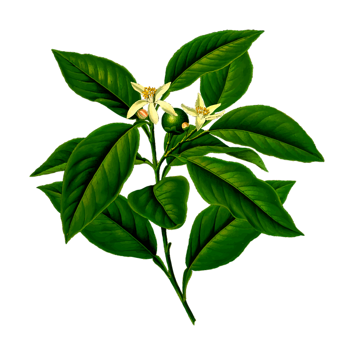
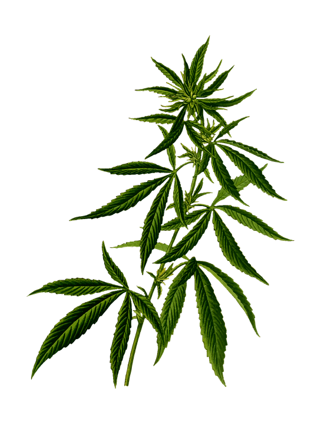
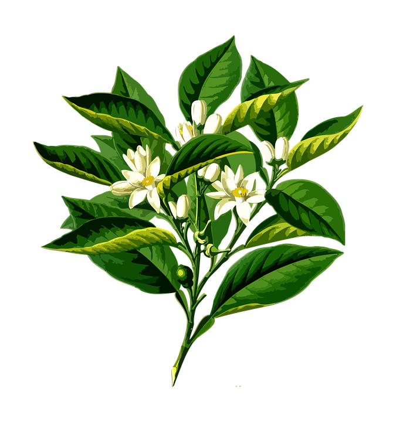
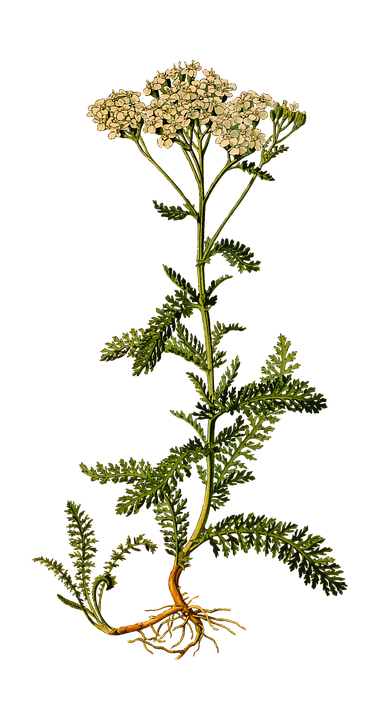
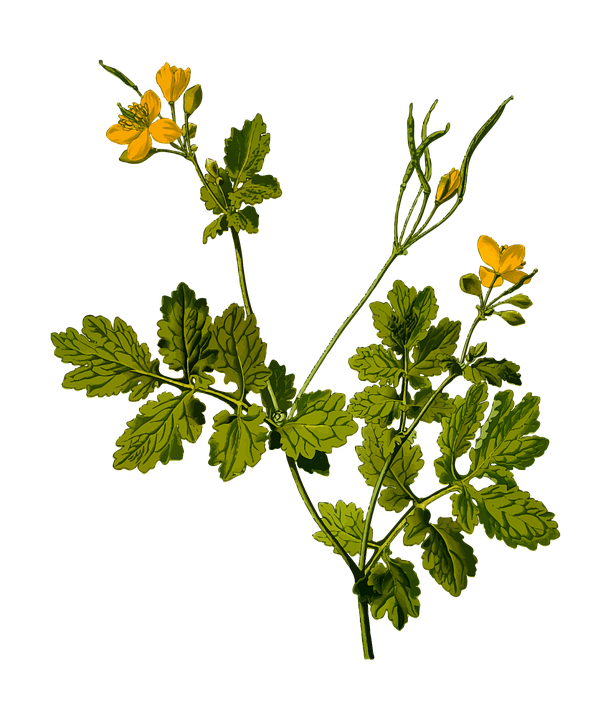
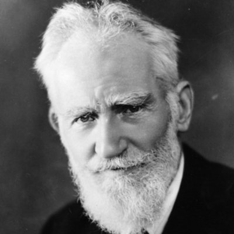

Jardins du Monde est une association bretonne de
solidarité internationale
qui agit depuis 26 ans pour
améliorer l’état sanitaire des populations qui n’ont pas ou peu accès à
la médecine conventionnelle.
A leur demande, elle met son expertise en ethnobotanique et sa
connaissance scientifique des pharmacopées traditionnelles à leur
disposition pour
valoriser l’usage des plantes médicinales et proposer le soin des
pathologies les plus courantes.
Jardins du Monde les aide à préserver leur patrimoine naturel et culturel
en
redonnant vie à des pratiques et des savoirs ancestraux, en partageant
largement ces savoirs et en favorisant la production et la
transformation de plantes au niveau local
. Avec ses partenaires, elle agit également pour améliorer l’accès à l’eau
et la nutrition des personnes les plus vulnérables.





Life isn't about finding yourself. Life is about creating yourself.

George Bernard Shaw